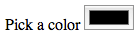
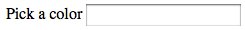

All web developers learn very quickly (and sometimes painfully) that the Web is a very rough place for them. Our worst curse is legacy browsers. Okay, let's admit it, when we said "legacy browser" we all have in mind old versions of Internet Explorer ... but it's far from the only one. A one-year-old Firefox such as the ESR version is a legacy browser too. And in the mobile world? When neither the browser nor the OS can be updated? Yes, there are many older Android phones or iPhones that have stock browsers that are not up to date. These are also legacy browsers.
Sadly, dealing with that wilderness is part of the job. Fortunately, there are a few tricks to know that can help you to solve about 80% of the problems caused by legacy browsers.
Learn about the issues
Actually, the most important thing is to read documentation about those browsers to try to understand the common patterns. For example, CSS support is the biggest issue with HTML forms in many cases. You are at the right place to start. Just check the support of the elements (or DOM interface) you want to use. MDN has compatibility tables available for many elements, properties or APIs that can be used in a web page. But there are other resources that can be amazingly helpful:
Browser vendor documentation
- Mozilla: You're in the right place, just browse MDN
- Microsoft: Internet Explorer Standards Support Documentation
- Opera: Web specification support in Opera
- WebKit: Because there are several different editions of this engine, things are a little trickier.
- The WebKit blog and Planet WebKit aggregate the best articles by WebKit core developers.
- The chromium web site is also important.
- As well as the Apple web site.
Independent documentation
- Can I Use has information about support for cutting edge technologies.
- Quirks Mode is an amazing resource about browsers' compatibility. The mobile part is one of the best available at the moment.
- Position Is Everything is the best resource available about rendering bugs in legacy browsers and their work-arounds (if any).
- Mobile HTML5 has compatibility information for a wide range of mobile browsers, not just the "top 5" (including Nokia, Amazon, and Blackberry).
Make things simple
Because HTML forms involves complex interaction, there is one rule of thumb: keep it as simple as possible. There are so many cases where we want forms that are "nicer" or "with advanced functionality", but building efficient HTML Forms is not a question of design or technology. Just as a reminder, take the time to read this article about forms usability on UX For The Masses.
{kind=link}
Graceful degradation is web developer's best friend
Graceful degradation and progressive enhancement are development patterns that allow you to build great stuff by supporting a wide range of browsers at the same time. When you build something for a modern browser, and you want to be sure it will work, one way or another, on legacy browsers, you are performing graceful degradation.
Let's see some examples related to HTML forms.
HTML input types
The new input types brought by HTML5 are very cool because the way they degrade is highly predictable. If a browser does not know the value of the type attribute of an <input> element, it will fall back as if the value were text.
<label for="myColor"> Pick a color <input type="color" id="myColor" name="color"> </label>
| Chrome 24 | Firefox 18 |
|---|---|
|  |  |
CSS Attribute Selectors
The CSS Attribute selectors are very useful with HTML Forms but some legacy browsers do not support it. In that case, it's customary to double the type with an equivalent class:
<input type="number" class="number">
input[type=number] {
/* This can fail in some browsers */
}
input.number {
/* This will work everywhere */
}
Note that the following is useless (because it's redundant) and can fail in some browsers:
input[type=number],
input.number {
/* This can fail in some browsers because if they do not understand
one of the selectors, they will skip the whole rule */
}
Form buttons
There are two ways to define buttons within HTML forms:
- The
<input>element with its attributetypeset to the valuesbutton,submit,resetorimage - The
<button>element
The <input> element can make things a little difficult if you want to apply some CSS by using the element selector:
<input type="button" class="button" value="click me">
input {
/* This rule turns off the default rendering for buttons defined with an input element */
border: 1px solid #CCC;
}
input.button {
/* This does NOT restore the default rendering */
border: none;
}
input.button {
/* That doesn't either! Actually there is no standard way to do it in any browser */
border: auto;
}
The <button> element suffers from two possible issues:
- A bug in some old versions of Internet Explorer. When the user click the button, it's not the content of the
valueattribute that is sent, but the HTML content available between the starting and ending tag of the<button>element. This is an issue only if you want to send such a value, for example if the processing of the data depends on which button the user clicks. - Some very old browsers does not use
submitas the default value for thetypeattribute, so it's recommended to always set the attributetypeon<button>elements.
<!-- Clicking this button sends "<em>Do A</em>" instead of "A" in some cases --> <button type="submit" name="IWantTo" value="A"> <em>Do A</em> </button>
Choosing one solution or the other is up to you based on your project's constraints.
Let go of CSS
The biggest issue with HTML Forms and legacy browsers is the support for CSS. As you can see from the complexity of the Property compatibility table for form widgets article, it's very difficult. Even if it's still possible to do a few adjustments on text elements (such as sizing or font color), there are always side effects. The best approach remains to not style HTML Form widgets at all. But you can still apply styles to all the surrounding items. If you are a professional and if your client requires it, in that case, you can investigate some hard techniques such as rebuilding widgets with JavaScript. But in that case, do not hesitate to charge your client for such foolishness.
Feature detection and polyfills
While JavaScript is an awesome technology in modern browsers, legacy browsers have many issues with it.
Unobtrusive JavaScript
One of the biggest problems is the availability of APIs. For that reason, it's considered best practice to work with "unobtrusive" JavaScript. It's a development pattern that defines two requirements:
- A strict separation between structure and behaviors.
- If the code breaks, the content and the basic functionalities must remain accessible and usable.
The principles of unobtrusive JavaScript (originally written by Peter-Paul Koch for Dev.Opera.com and now moved to Docs.WebPlatform.org) describes these ideas very well.
The Modernizr library
There are many cases where a good "polyfill" can help a lot by providing a missing API. A polyfill is a bit of JavaScript that "fills in the holes" in the functionality of legacy browsers. While they can be used to improve support for any functionality, using them for JavaScript is less risky than for CSS or HTML; there many cases where JavaScript can break (network issues, script conflicts, etc.). But for JavaScript, if you work with unobstructive JavaScript in mind, if polyfills are missing, it's no big deal.
The best way to polyfill missing API is by using the Modernizr library and its spin-off project: YepNope. Modernizr is a library that allows you to test the availability of functionality in order to act accordingly. YepNope is a conditional loading library.
Here is an example:
Modernizr.load({
// This tests if your browser supports the HTML5 form validation API
test : Modernizr.formvalidation,
// If the browser does not support it, the following polyfill is loaded
nope : form-validation-API-polyfill.js,
// In any case, your core App file that depends on that API is loaded
both : app.js,
// Once both files are loaded, this function is called in order to initialize the App.
complete : function () {
app.init();
}
});
The Modernizr team conveniently maintains a list of great polyfills. Just pick what you need.
Note: Modernizr has other awesome features to help you in dealing with unobstructive JavaScript and graceful degradation techniques. Please read the Modernizr documentation.
Pay attention to performance
Even though scripts like Modernizr are very aware of performance, loading a 200 kilobyte polyfill can affect the performance of your application. This is especially critical with legacy browsers; many of them have a very slow JavaScript engine that can make the execution of all your polyfills painful for the user. Performance is a subject on its own, but legacy browsers are very sensitive to it: basically, they are slow and the more polyfills they need, the more JavaScript they have to process. So they are doubly burdened compared to modern browsers. Test your code with legacy browsers to see how they actually perform. Sometimes, dropping some functionality leads to a better user experience than having exactly the same functionality in all browsers. As a last reminder, just always think about the end users.
Conclusion
As you can see, dealing with legacy browsers is not just about forms. It's a whole set of techniques; however mastering all of them is beyond the scope of this article.
If you read all the articles of this HTML Forms guide, you should now be at ease with using forms. If you discover new techniques or hints, please help improve the guide.